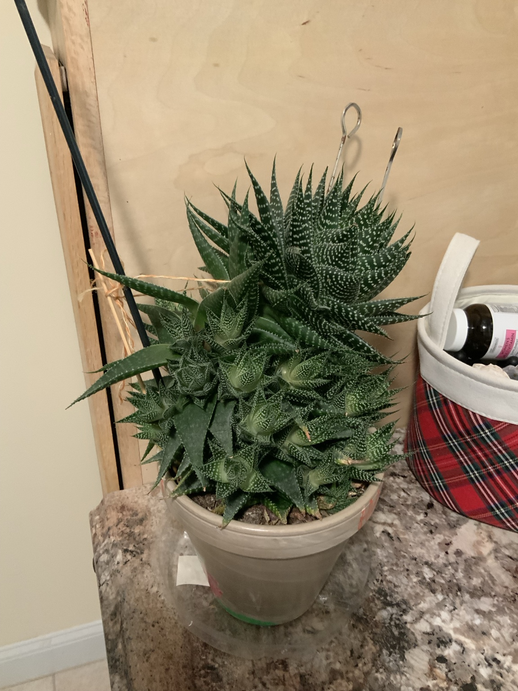
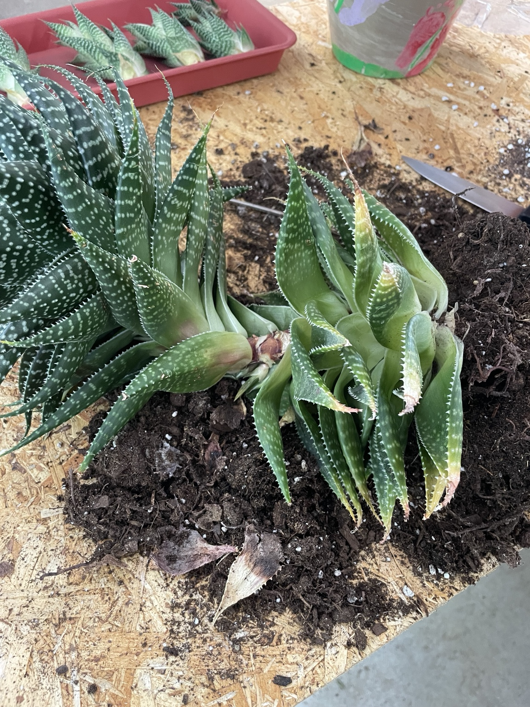
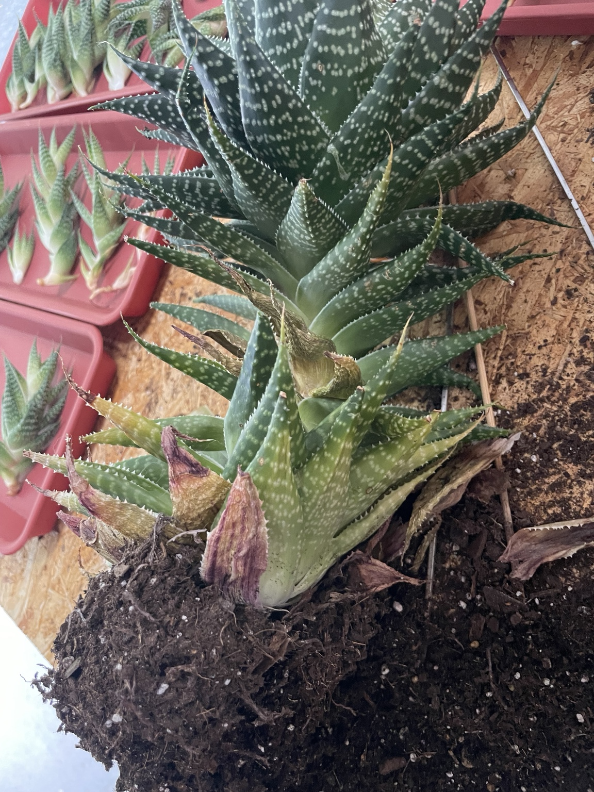
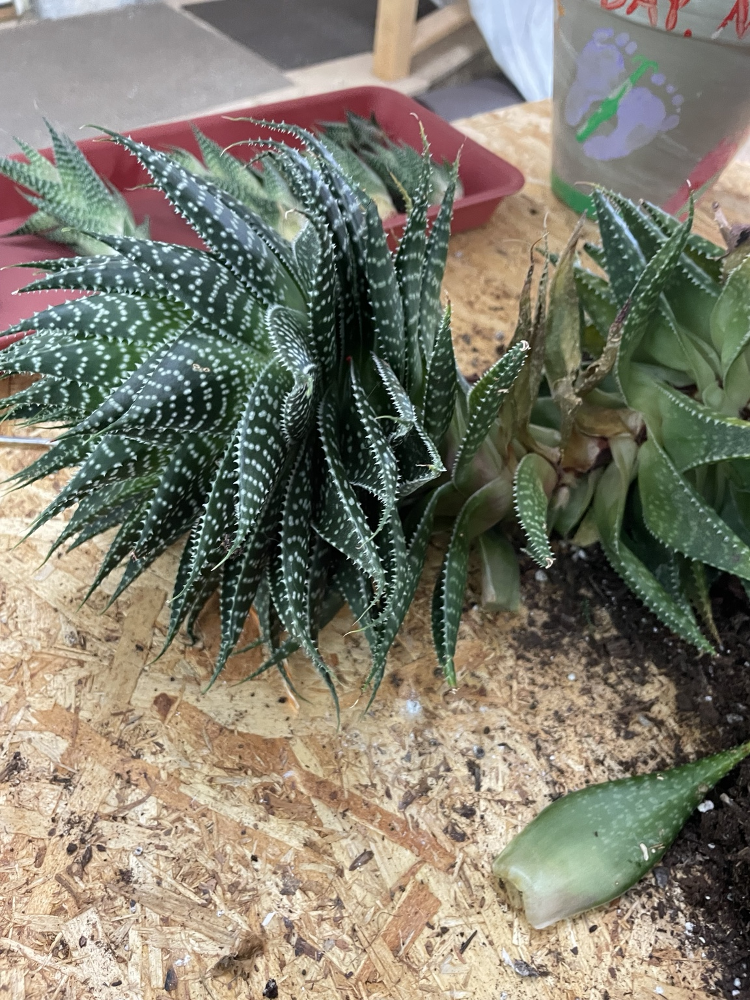
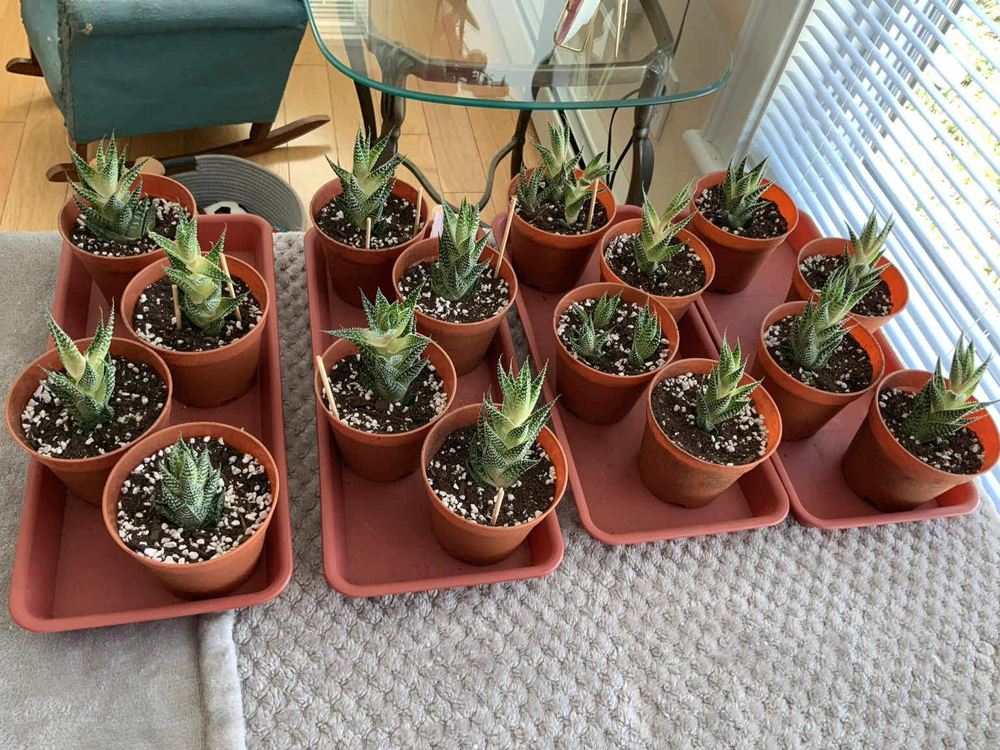
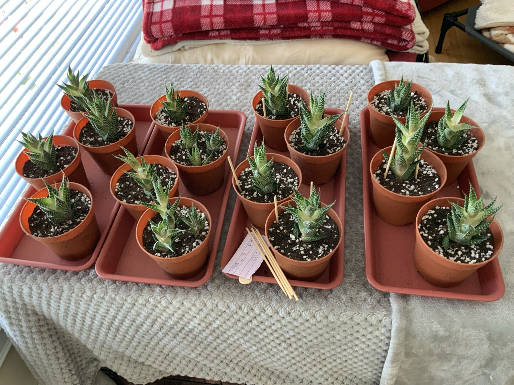
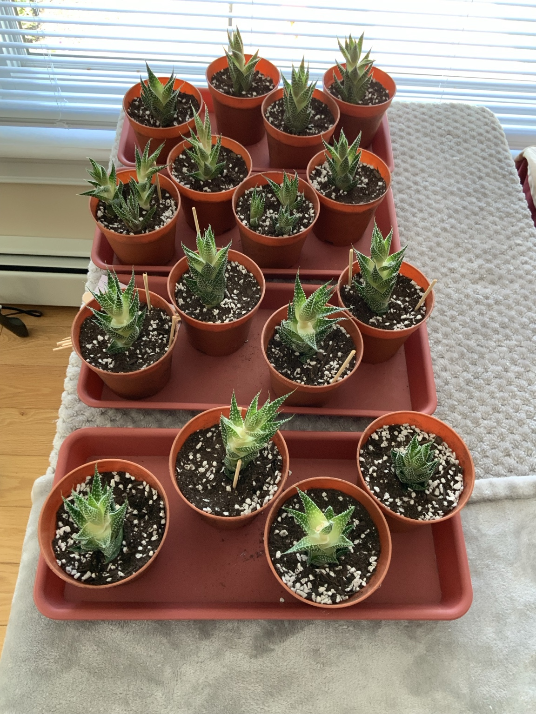

Project record
This page restores the missing photos of the Zebra Haworthia mother plant, the separated pups, and the newly repotted plants. The pups were removed and planted in July 2026.
HouseplantPropagationJuly 2026
Photo timeline








What was done
Pups were separated from the mother plant, allowed to dry briefly, and planted individually in a fast-draining cactus or succulent mix. Rooting compound was not required.
Next care step
Keep in bright indirect light. Avoid frequent watering while roots establish. Water only when the mix has dried fully, then allow it to drain completely.